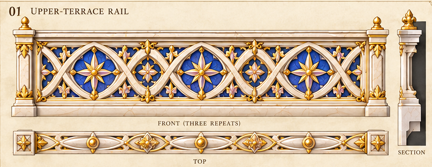
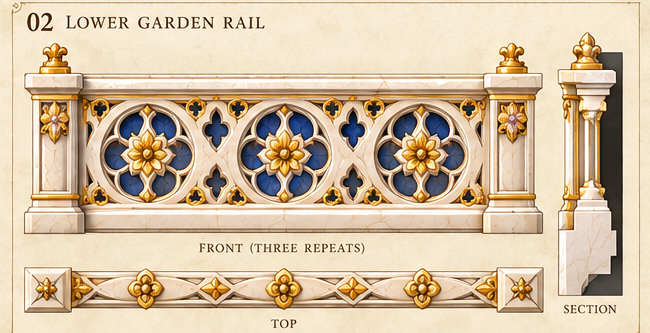
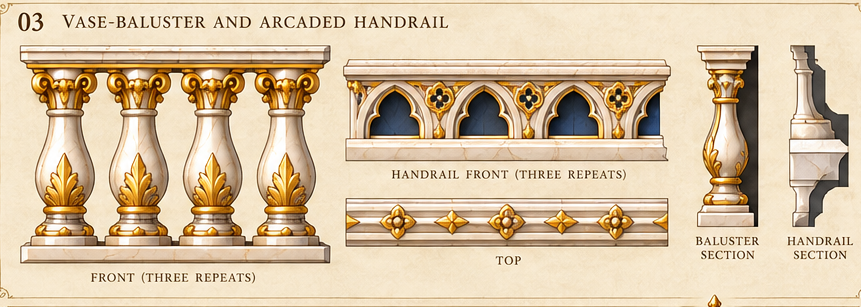
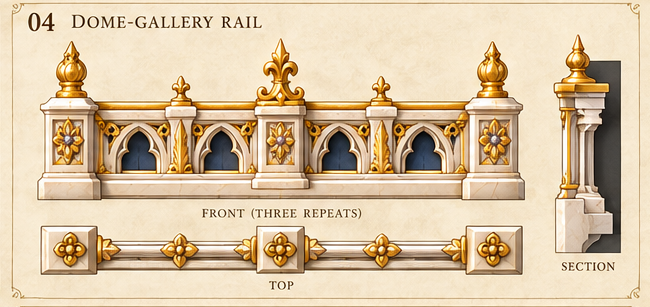
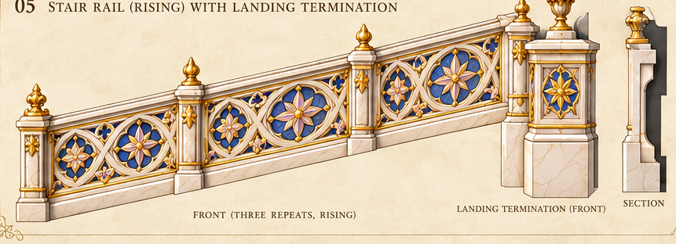
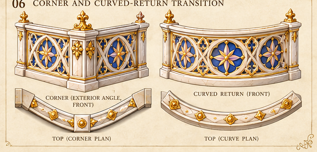
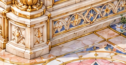

Original palace parapet and conservatory panels
Exact original source pixels; open one panel at a time.
upper-star-rail

lower-flower-wheel-rail

vase-and-arcade-rail

compact-gallery-rail

rising-stair-rail

corner-curved-rail

Conservatory original outside footrail and paving edge
